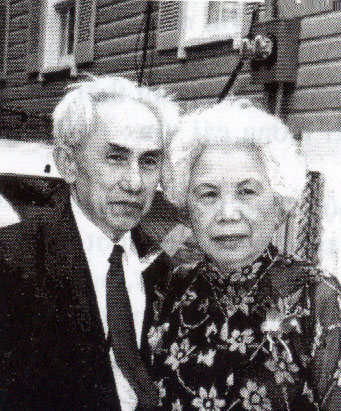

Viết hồi ký Buồn Vui đời Nghệ Sĩ, tôi ghi lại những kỷ niệm của một thời mà tôi lang thang trên bước đường nghệ thuật sân khấu. Trong những kỷ niệm đó, ''tôi'' – ''cái tôi'' chỉ là một phần cá thể rất nhỏ của tôi, hòa nhập với cả một tập thể nghệ sĩ để cùng làm chứng nhân của một thời điểm mà xã hội Việt Nam còn có ý khinh bạc đối với người nghệ sĩ, xem họ như những kẻ xướng ca vô loại. Vì vậy, trong tập hồi ký nầy, chuyện của các bạn nghệ sĩ đồng nghiệp của tôi chiếm một số trang quan trọng, tôi là người chứng kiến và cũng là người cùng chung số phận, cùng chia xẻ với các bạn đó những nỗi vinh, nhục của nghề hát cải lương.

.Thời điểm đó lại là lúc đất nước Việt Nam đang trải qua hai cuộc chiến tranh sắt máu ( 1945-1975 và sau 1975), sinh mạng của những người dân bình thường bị xem như cỏ rác. Sinh mạng của người nghệ sĩ lại còn bị rẻ rúng hơn nữa. Qua các chuyện: ''Những tập tục lạ đời '', ''Đào hát biết hóa phép thần thông'', ''Nghệ sĩ Tám Vân … '', quí độc giả sẽ thấy được những phi lý của những kẻ đã lạm dụng quyền thế để hành hạ, đàn áp nghệ sĩ.
Tuy nhiên qua câu chuyện bị áp chế vô lý đó, người nghệ sĩ vẫn giữ được cái tâm bình thản để vượt qua, để tồn tại và để toàn tâm toàn ý cống hiến nghệ thuật ca hát, góp phần làm đẹp cho đời và làm vui lòng khán giả ái mộ.
Qua những trang hồi ký Buồn Vui đời Nghệ Sĩ, tôi muốn giới thiệu với quí độc giả sự khổ tâm rèn luyện nghề nghiệp của các nghệ sĩ, những khó khăn, tai nạn trên bước đường lưu diễn, những cuộc sống cực khổ đói khát mà có một thời trước đây, người ta đã ban cho các nghệ sĩ cải lương cái tên: ''Những kẻ ăn quán ngủ đình''.
Tuy nhiên trong cuộc sống rày đây mai đó, với một tương lai bất định, người nghệ sĩ cải lương được một niềm an ủi khích lệ lớn lao, đó là trước hết và trên hết mọi sự, người nghệ sĩ đã sống với nhau bằng một tâm hồn chân thật, tương thân tương ái. Họ biết tôn sư trọng đạo. Họ tìm vui và chia vui với nhau trong câu ca, điệu hát, trong câu hò Đồng Tháp hay trong bài ca vọng cổ Bạc Liêu. Cái đẹp của văn chương, cái quyến rũ của làn điệu cổ nhạc dân tộc, các câu chuyện tình vẹn thủy toàn chung của các vở tuồng đã nâng cao tâm hồn người nghệ sĩ để họ chấp nhận những lao khổ nhọc nhằn về phần mình mà được đi khắp các miền đất nước để gieo rắc những bông hoa tư tưởng đẹp, những điệu hát câu hò thắm đượm tình tự dân tộc.
Các nghệ sĩ mà tôi có dịp nhắc qua trong những trang hồi ký nầy, đối với tôi, là những bạn thâm giao đã cùng tôi chia ngọt xẻ bùi, đã giúp tôi không ít trên đường sự nghiệp sáng tác của tôi. Tôi viết để nhớ lại các bạn và cảm ơn các bạn.
Thêm nữa, một người không phải là nghệ sĩ nhưng người ấy đã theo tôi lang thang trên các nẻo đường nghệ thuật hơn năm mươi sáu năm liên tục, đã cùng tôi chia xẻ vui buồn, cùng gánh vác khó khăn nặng nhọc và là chỗ dựa tinh thần và tình cảm của tôi, giúp tôi yên tâm, phấn đấu không ngừng trên con đường sự nghiệp sân khấu mà tôi đã chọn. Người đó là vợ tôi: bà Nguyễn thị Ba, một cái tên bình dị như con số 3 bình thường, nhưng đó là con số “hên” của cuộc đời Nguyễn Phương. Những chuyện Buồn Vui đời Nghệ sĩ trong quyển sách này có sự chia xẻ và dự phần của vợ tôi. Xin cảm ơn vợ tôi và các con tôi.
Xin trân trọng kính dâng lên quí sư phụ của tôi, các ông Năm Châu, Năm Nở, Thành Tôn những kỷ niệm của một thời Nguyễn Phương theo các thầy học nghiệp.
Montréal, mùa Xuân 2005.
Soạn giả Nguyễn Phương